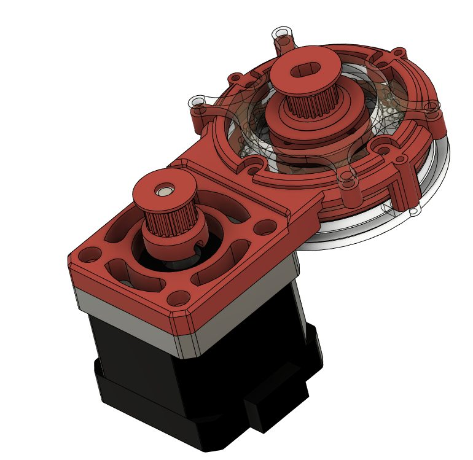
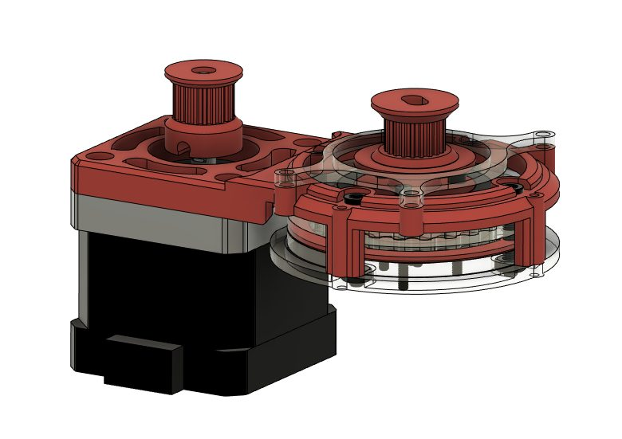
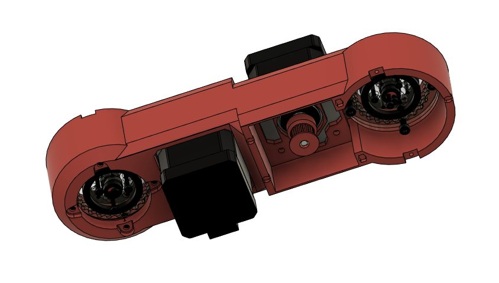
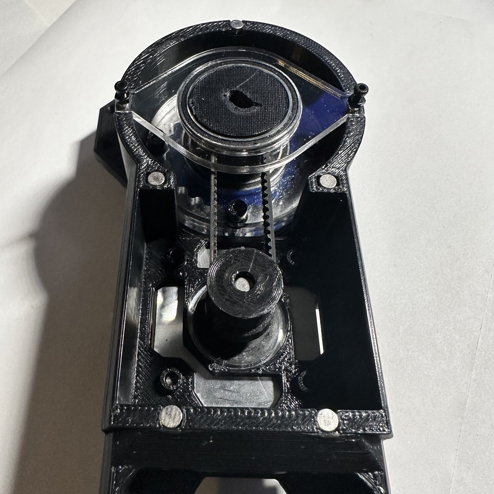
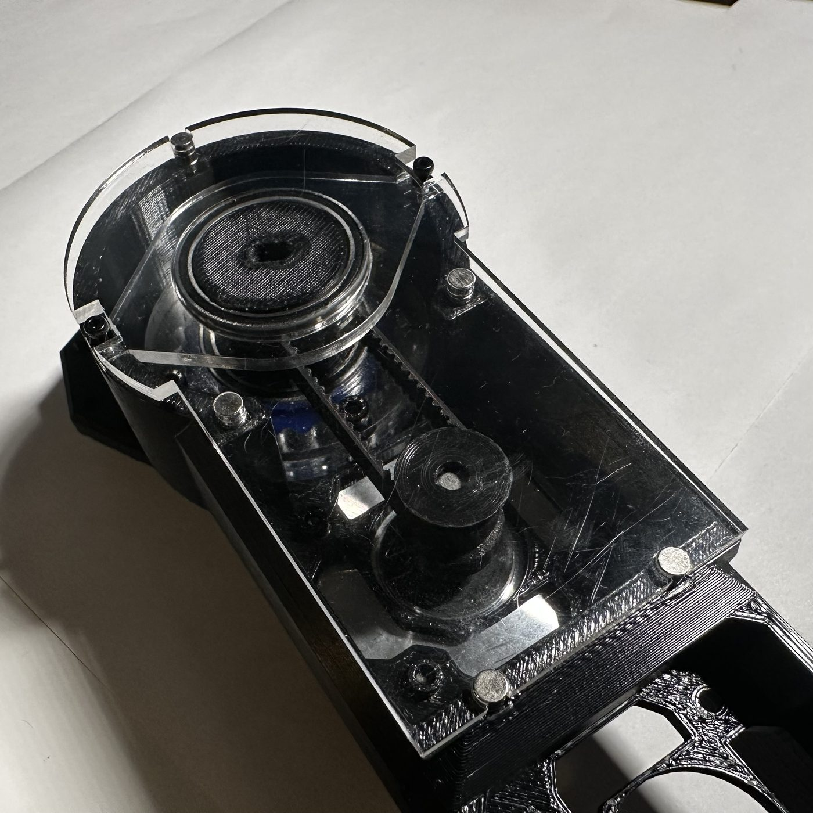
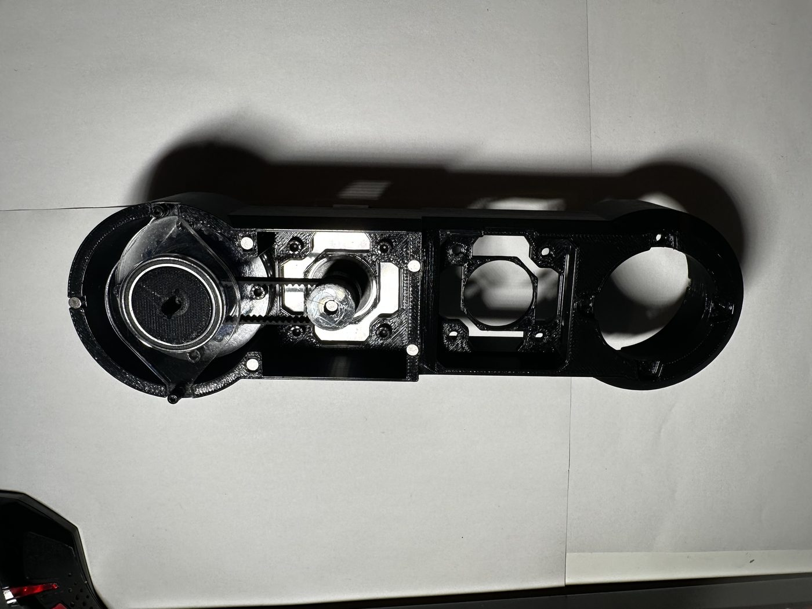
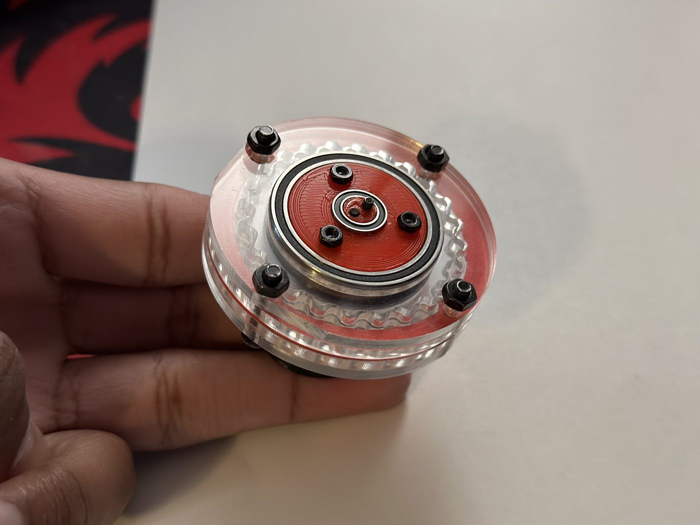

6DOF DESKTOP ARM
A desktop arm, from scratch


A six-axis robotic arm that sits on a desk. Sahil and I designed almost all of it ourselves: every arm part, linkage and assembly, the cycloidal actuators and the equations that define their curves, the motor driver circuitry and PCB, the tele-op controllers, and most of the code.
The few things we couldn't build from scratch, like an inverse kinematics solver, we still studied. Either we plan to come back to them, or we have write-ups and tools we made to understand and use them. All of it is now released as open-source documentation under Verso Robotics.
One framework, different arms
We didn't set out to make one arm. We made a framework for building 6DOF arms, and then each built our own with it. The two arms look very different from each other, but they're made from the same building blocks.






My part of it was the cycloidal function generator and the actuators it produced, the mechanics of my arm, and the miniature tele-op controller.
Cycloidal actuators
The arm runs on NEMA stepper motors, which don't have nearly enough torque or precision on their own. Each joint needed a reducer.
Instead of buying gearboxes, I generated our own. I wrote a parametric cycloid generator with the Desmos API, and its x(t) and y(t) go straight into Fusion 360's Equation Driven Curve add-in, so a disc profile goes from sliders to CAD with no hand-drawing. Every actuator in the arm came out of it.
The result is a 28:1 cycloidal gearbox with nearly zero backlash, and it's still backdrivable.


The discs and housings are laser-cut, which is also why everything in these photos is see-through: you can watch the disc wobble around the pins. If you don't have a laser cutter, the same parts can be 3D printed.
Tele-op controller
The arm is driven with a miniature copy of itself. You move the controller's joints by hand and the arm follows. Since the controller has the same joints as the arm, this only needs forward kinematics.
Inverse kinematics, where you give the arm a target and it works out the joint angles, was one of the pieces we didn't build from scratch. We studied it and made tools to understand and use it, and it's something I want to come back to.


Cost and build
Most of the arm is 3D printed. The cycloidal actuators and the covers are laser-cut, and those can be printed too if laser-cutting isn't an option.
It's by far the most time I've spent on any project.
Open-source docs
Everything Sahil and I made for this project is compiled and released at versorobotics.com.
If you have questions about any of it, email me at nikhilvijay.engineering@gmail.com.
Photos